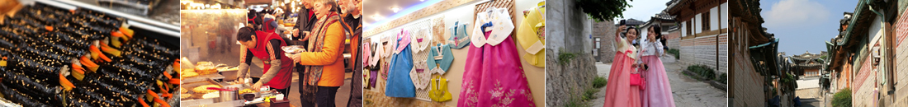
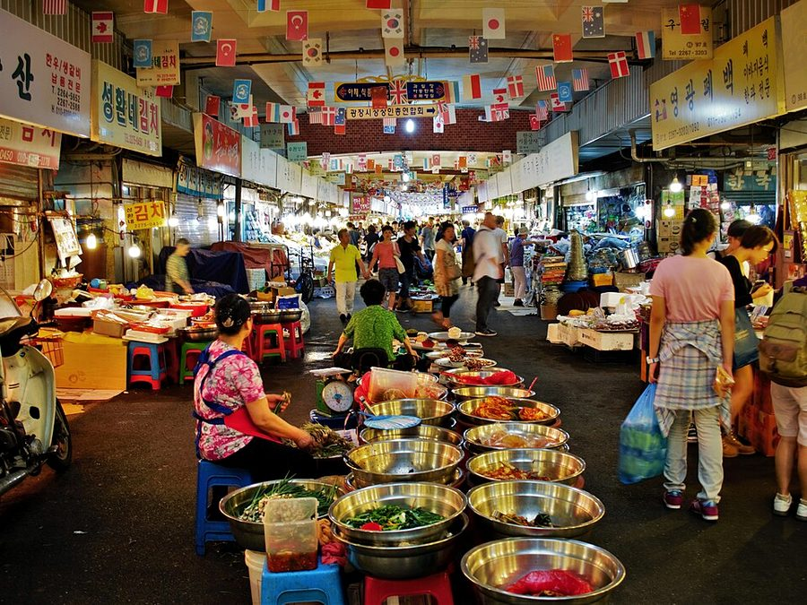
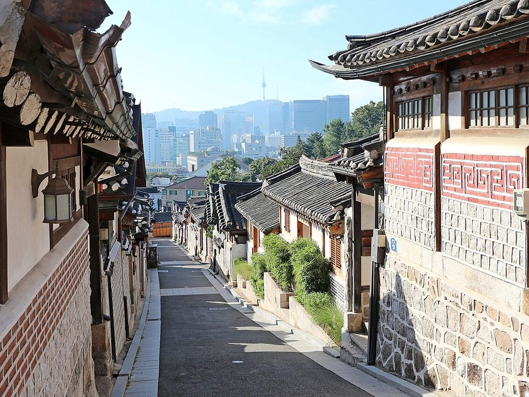
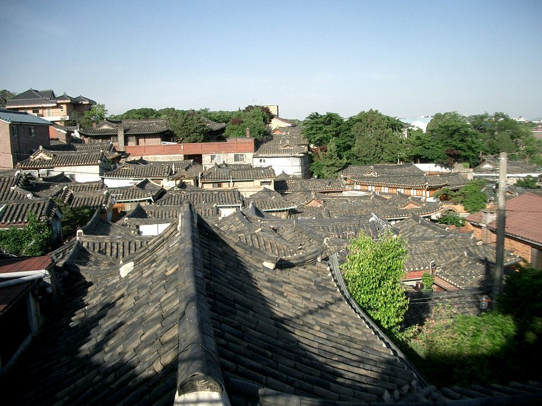
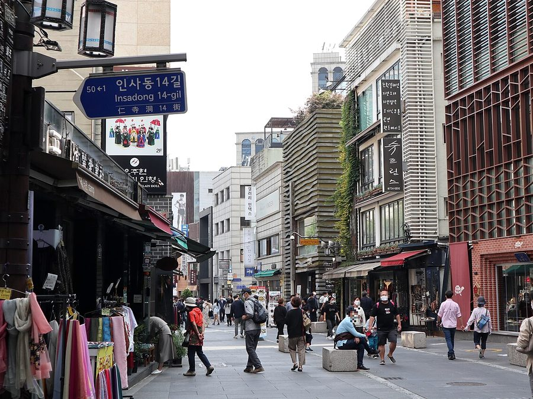
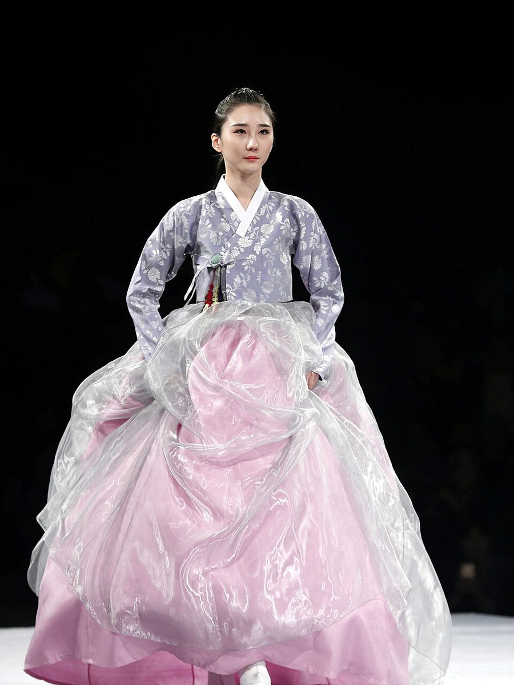

A guided half-day tour of central Seoul for participants and accompanying persons, with an English-speaking guide.
참가자와 동반자를 위한 서울 도심 반나절 가이드 투어입니다. 영어 가이드가 함께합니다.
- 09:30Hotel
- 10:00Gwangjang Market
- 11:30Bukchon Hanok Village
- 12:30Samcheong-dong (lunch)
- 14:30Insa-dong
- 15:00SM Duty Free
- 15:30Hotel
- 09:30호텔 출발
- 10:00광장시장
- 11:30북촌 한옥마을
- 12:30삼청동 (점심)
- 14:30인사동
- 15:00SM면세점
- 15:30호텔 해산

The nation's first market and still a favourite: street food downstairs, the largest silk, satin and linen shops upstairs.
우리나라 최초의 상설 시장. 1층은 먹거리, 2층은 국내 최대 규모의 비단·린넨 상가입니다.

Hundreds of traditional houses from the Joseon Dynasty between two palaces.
두 궁궐 사이에 조선시대 한옥 수백 채가 모여 있습니다.

Small cafés, galleries and shops along a quiet street of old houses.
작은 카페와 갤러리가 이어지는 한옥 골목입니다.

Antiques and traditional crafts along one main road with alleys on each side.
골동품과 전통 공예품 가게가 큰길과 골목을 따라 늘어서 있습니다.

Hanbok experience
Rental for 2 hours. Woman KRW 30,000–50,000, man KRW 40,000. Extras: pigtail hair (daenggi), shoes KRW 5,000–7,000. Visitors wearing hanbok enter the royal palaces free of charge.
한복 체험
2시간 대여. 여성 30,000–50,000원, 남성 40,000원. 추가: 댕기머리·신발 5,000–7,000원. 한복을 입으면 고궁 입장이 무료입니다.
Conditions
- Minimum 4 people · Tuesday, Thursday, Saturday and Sunday · 09:30–15:30
- Inclusion: tour guide · Exclusion: transportation, lunch, personal expenses
- Child fare same as adult (under 24 months free) · Passport required
Cancellation policy
- 4 days before: full refund
- 3 days before: 30% charge
- 2 days before: 50% charge
- 1 day before or on the day: non-refundable
조건
- 최소 4인 · 화·목·토·일 운영 · 09:30–15:30
- 포함: 가이드 · 불포함: 교통, 점심, 개인 경비
- 아동 요금 성인과 동일 (24개월 미만 무료) · 여권 필수
취소 규정
- 4일 전: 전액 환불
- 3일 전: 30% 공제
- 2일 전: 50% 공제
- 1일 전 또는 당일: 환불 불가